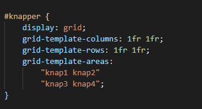

CSS (Cascading Style Sheets) er et kodesprog der bruges til at få designet sin HTML kode. Så tingene er i den rigtige størrelse og på det rigtige sted på websitet.
En rigtig god ide når du skal designe en hjemmeside er og starte sit CSS med et reset style sheet. Hver browser har hver sine standard størrelse til font'en ved h1-6 og paragrafs. Når du laver et reset stylesheet, instiller du alle webbrowsers instillinger til det samme.
Der er mange forskellige ting du kan gøre med CSS.
Du kan ændre baggrundsfarven på forskellige sectioner eller baggrundsfarven på hele sitet.
Du kan også ændre hvor tyk skriften skal være og hvor stor den skal være. Du kan også ændre dens farve.
Du kan også vælge at lave mellemrum mellem tingene du har sat på dit site gennem padding og margin. Padding er mellemrum inde i sectionen og margin er afstand udenfor sectionen.
Man kan også bare sætte et billede til at fylde 80% af sectionen den ligger i. Så den tilpasser sig udfra om det er på mobil eller på en stor skærm.
Noget man også bruge er display flexbox. Som gør at de forskellige sectioner kan stå forskellige i forhold til hinanden. Så hvis du sætter den første section til at være i venstre side. Overtager den næste section dens plads.
Display grid er nok det meste optimale til at sætte et website op. Da du har nemmere overblik over hvordan den skal være på sitet. Du kan bestemme hvor og hvor meget hvor section skal fylde.
Der kan du sætte dit grid til at virke anderledes i forhold til hvor stor skærmen er som ser websitet. Det kan du gøre ved at skrive @media screen and (min width: [antal]px). Så ændrer den sig hvis skærmen er det antal pixel som du har slået det til.
Det allermest optimale er at du vælger at designe websitet i mobile first. Ellers bliver det noget bøvl og kommer til at ligne noget halvfærdigt når det kommer ned i mobilversionen.